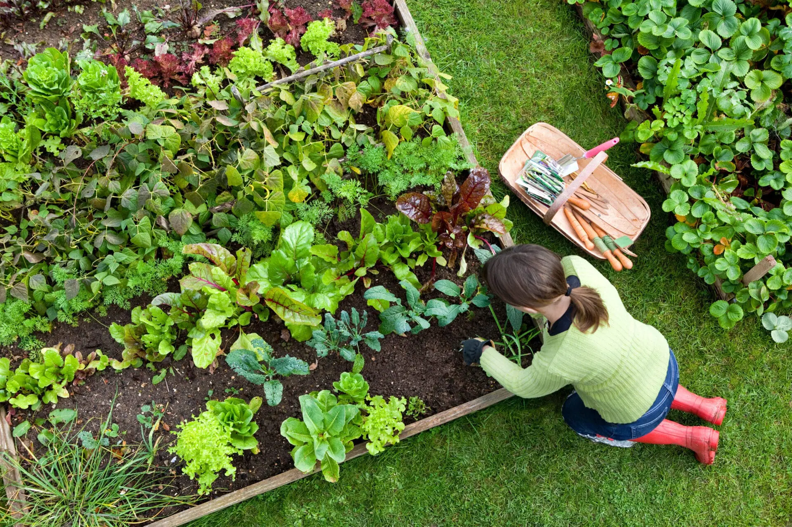

About This Activity
Gardening helps you connect with nature while improving patience, focus, and mental well-being.
Benefits:
- Reduces stress and promotes relaxation
- Boosts patience and mindfulness
- Enhances connection with nature
Step-by-Step Instructions
1
Choose plants you want to grow (flowers, vegetables, or herbs)
2
Prepare soil, pots, or garden beds
3
Plant seeds or seedlings and water them carefully
4
Maintain plants regularly and observe their growth
Tips for Success:
Keep your phone away while gardening. Focus on your plants, enjoy the process, and immerse yourself in nature.